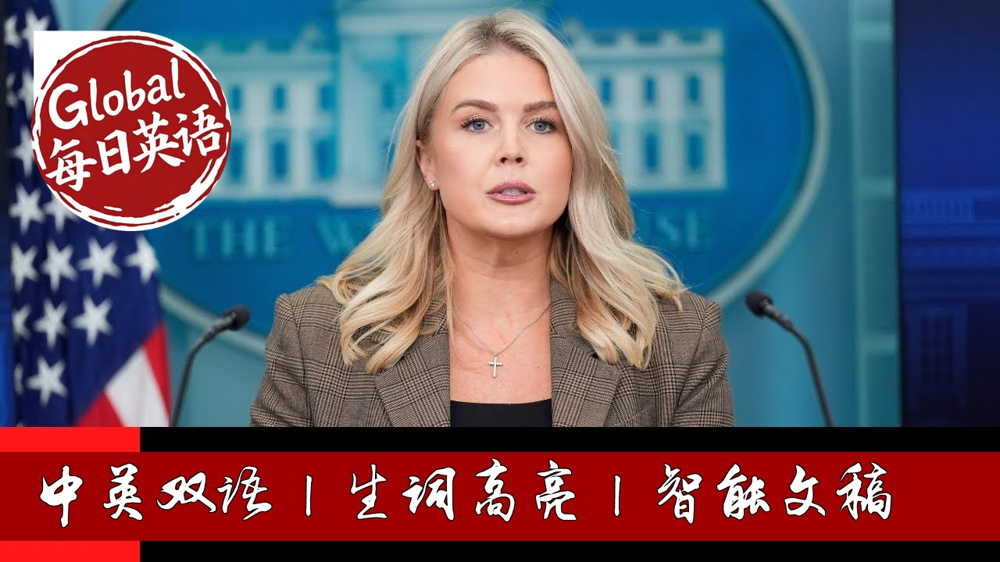

【美国白宫新闻发布会 20250923 美国在特朗普的带领下一片繁荣：蓝领工人的工资以六十年来的最快速度增长｜道指、标普500和纳斯达克指数均创下历史新高】
Summary: Preview of President Trump's packed schedule, strong economic indicators, and administration's firm stance against rising left-wing political violence following the assassination of Charlie Kirk.
摘要： 白宫简报会预览了特朗普总统紧凑的一周行程，包括关注自闭症危机、联合国大会演讲及双边会晤。简报同时指出美国经济指标强劲，并阐述了政府在查理·柯克遇刺后对左翼政治暴力采取的强硬立场。

⏱️ Estimated Reading Time: 63 min.
📚 四级生词 📚 六级生词 📚 雅思生词 📚 托福生词 📚 专八生词 📚 SAT生词 📚 考研生词 📚 GRE生词
Good afternoon everyone.
Happy Monday.
Good to see all of you here.
I want to start with a preview of President Trump's very busy schedule for the week.
Later this afternoon, the president will be making a major announcement focused on the childhood autism epidemic alongside his top health adviserss who are working to make America healthy again.
This will be a powerful display of how the entire Trump administration is committed to addressing root causes of chronic conditions and diseases, embracing full transparency in government, and championing gold standard science.
Tonight, the president will depart to New York City ahead of the 80th session of the United Nations General Assembly.
He will be joined in New York City by the first lady.
Tomorrow morning, President Trump will deliver a major speech touting the renewal of American strength around the world, his historic accomplishments in just eight months, including the ending of seven global wars and conflicts.
The president will also touch upon how globalist institutions have s significantly decayed the world order and he will articulate his straightforward and constructive vision for the world.
The president will also be hosting bilateral meetings with the UN Secretary General and the leaders of Ukraine, Argentina, and the European Union.
The president will also later in the day hold a multilateral meeting with Qatar, the Kingdom of Saudi Arabia, Indonesia, Turkey, Pakistan, Egypt, the UAE, and Jordan.
After these important meetings, the president will attend a reception tomorrow night with more than 100 world leaders before returning to Washington DC.
On Thursday, here at the White House, President Trump will welcome President Erdogan of Turkey for a bilateral meeting.
And on Friday, the president will travel to Long Island for the Ryder Cup golf match between the United States and Europe.
This event is one of the greatest sporting events in the world, and it would not be taking place this year without President Trump's help.
President Trump signed an executive order last week preventing a strike that would have crippled the New York City area ahead of the tournament.
And at the request of the five labor unions who all represent workers on the Long Island Railroad, one of the greatest golfers in the world, Bryson Dashambo, praised the president's critical intervention, saying, quote, "When the possibility of a strike threatened to disrupt transportation and attendance, President Trump stepped up and took the action needed to protect this worldclass competition."
Thanks to President Trump's decisive leadership, the Ryder Cup experience will be everything fans in the golf community deserve.
Again, that's a quote from the great golfer Bryson Dashambo.
Now, let's all hope the American Rder Cup team can take home the trophy.
In other news, positive economic data continues to pour in.
Brand new polling shows that Americans faith in the economy and the direction of the nation is back on track and shooting even higher.
Home ownership is more affordable with mortgage rates dropping to a three-year low.
For new home buyers, this represents a 250 decline in your monthly mortgage payment, or nearly 3,000 a year.
And President Trump has made it very clear he wants to continue to see mortgage rates decline to a record low, just like they did in his first term.
Thanks to President Trump's unleashing energy dominance, gas prices are dropping, and Americans are spending the smallest share of their disposable income on gasoline since 2005.
Additionally, the annual cost to own and operate a new vehicle is down by nearly 6% over the last year.
Americans are earning more and they are spending more than ever before.
After inflation outpaced for 26 straight months under Joe Biden, real wages have increased nearly every month since President Trump took office, with wages for bluecollar workers rising at the fastest rate in six decades.
Retail sales are also booming, up 5% over last year.
And the stock market is booming.
And Americans retirement accounts continue to do well with the Dow, S&P 500, and NASDAQ all hitting new record highs.
In fact, the S&P 500 is up nearly 15% and the DA NASDAQ is up more than 21% since election day.
As part of President Trump's mission to restore America as the manufacturing superpower of the world, he has secured nearly $9 trillion in US investment, nearly nine times more than Biden attracted in his entire four-year term.
And we expect that number to be upwards of 15 trillion very soon.
We're already seeing the initial economic benefits of these investments with industrial production recently rising to an all-time high.
President Trump built the greatest economy in the history of the world in his first term, and we are witnessing him do it all over again.
Now, before I open it up to questions, I do want to speak on the heinous political assassination of Charlie Kirk.
As President Trump powerfully stated yesterday, this assassination was an attack on everything that makes the United States of America the greatest country on earth.
But that attack has completely failed.
The heartwarming response from the overwhelming majority of the American people over the past two weeks is all of the proof that you need.
The assassin who took Charlie's life can destroy flesh and blood, but he can never destroy the values that Charlie stood for.
All across the country, millions of Americans have prayed, hosted vigils, attended church services, became politically engaged for the first time, and honored the legacy of Charlie and the ideals he died speaking for.
The beautiful memorial service attended by President Trump and 100,000 great Americans in State Farm Stadium yesterday was just the latest latest example.
And Erica Kirk's mercy was one of the greatest acts of grace this world has ever seen.
May God continue to watch over Erica and their beautiful children.
Unfortunately, there have been some jarring exceptions to this unity.
This past Friday, 58 House Democrats voted no and 38 voted present on a resolution that simply stated condemning in the strongest possible terms the assassination of Charles James Kirk in all forms of political violence.
There were no strings attached to this vote.
This was a simple gesture of human decency to denounce political violence.
I wish I could say that this was only a fringe group, but 96 votes is nearly half of the entire House Democrat caucus.
And they didn't just vote against this basic resolution condemning political violence.
A number of those same Democrats took to the House floor to smear Charlie Kirk's name.
The man wasn't even buried yet, and Democrat members of Congress were denigrating his memory on the floor of the House of Representatives.
This was truly a sad moment in a clear clear reflection of how radical the Democrat party has become.
Many Democrats in elective office have now been totally captured by a radical fringe of the far-left base who want to dehumanize every person they disagree with.
We must continue to call this wickedness out.
It's the only way that our nation can heal.
For too long, past leaders have offered platitudes while political violence has been allowed to fester and innocent in and harm innocent Americans.
There has been coordinated campaigns dating back years spearheaded by radical left-wing organizations centered on dehumanizing, intimidating, doxing, and even attacking Americans whom they disagree with.
These groups have radicalized impressionable individuals to fment violence.
An attempted transgender assassin traveled to Justice Brett Kavanaaugh's家族住宅图谋夺其性命。
An attempted assassin came within an inch of ending President Trump's life in Butler, Pennsylvania.
And on the campaign trail, another attempted assassin tried to kill the president at his golf club in Florida.
A left-wing
Assassin shot United Healthcare CEO Bryant Thompson right in the back in the heart of New York City.
ICE agents are facing a more than 1,000% increase in assaults for simply doing their jobs.
Violent radical left-wing mobs engaged in illegal behavior, targeted Jewish Americans, and shut down America's college campuses under the previous administration.
Left-wing mobs burned down Tesla dealerships out of quote protest of Elon Musk in his policies.
In May, a left-wing activist shouting free Palestine murdered two innocent Israeli embassy staffers outside of the DC Jewish Museum here in Washington.
These are just a few examples, prominent examples of the growing left-wing政治暴力 in our country.
Enough is enough.
And as President Trump has promised, he will directly address the dark sources funding and supporting this domestic terrorism to finally restore order in our country.
The American people can expect further very strong action on this very soon.
Everyone, Republican, Democrat, everyone in between.
We all deserve to live in a country where we do not have to fear for our lives simply for stating what we believe in.
With that, I will take your question.
In today's new media seat, we have Monica Paige, who is the White House correspondent for Turning Point USA's news organization on the front lines.
Monica, thank you for being here.
We're so sorry for the loss of Charlie.
I know you work for him.
You are very close to him and we appreciate you're being in the new media seat and also your commitment to covering the White House.
You are here every day just like the rest of everyone in this room.
So, why don't you kick us off today?
Thank you so much, Caroline.
Um, I don't think you realize how much it means to me to be here in this seat um especially on behalf of Turning Point USA and front lines.
We greatly appreciate it.
We also greatly appreciate the outpouring of support um and just really kind words that we heard yesterday at the memorial service that means more to us than I don't think anybody ever knows and even the global support that we're seeing for Charlie has been overwhelming and it doesn't go unnoticed.
So, thank you so much.
I have three questions if I may on the horrific murder of Charlie Kirk.
um government and local officials said that Antifa inscriptions were in engraved in these bullet casings that killed Charlie Kirk.
Um it appears to be a trend, you know, especially after what we saw in the enunciation church shooting, Catholic church shooting.
Additionally, Steven Miller recently commented on the rise in this kind of violence, saying there is a domestic terrorist movement growing in this country.
The president is designating Antifa as a domestic terrorist organization.
I'm wondering what is the approach to holding these people accountable um just to ensure that violence like this just is eradicated moving forward.
Sure.
Well, Antifa is going to be designated a domestic terrorist organization.
The president intends to sign that executive order very soon, as soon as it's drafted, as soon as today later this afternoon.
Um, and this is something the president campaigned on because we have seen a rise in violence, uh, perpetuated by Antifa, uh, radical people across this country who subscribed to this group.
And unfortunately, it's gone widely uncovered by many in the legacy media.
It also went completely ignored by the previous administration.
Not anymore.
Not only, as you mentioned, were the bullet casings subscribed with Antifa mods, if you will, in the heinous assassination of Charlie, but there have also been more examples than I could read off for you here in this briefing room today of violence uh from Antifa.
I will just read a few.
In July 2025, several members of an Antifa cell ambushed and opened fire on officers at an ICE facility in Alvarado, Texas, shooting one officer in the neck.
Also in July 2025, three Antifa members were charged with assaulting a police officer during a violent riot outside an ICE facility in Portland, which for weeks prior had been under siege from the local Antifa terror cell.
In February 2024, a transgender Antifa terrorist detonated an explosive device outside of the office of the Republican attorney general of Alabama.
In July 2023, Antifa members linked to abortionist group Jane's Revenge firebombed pro-life facilities and vandalized churches.
In tw January 2022, a suspected Antifa member was arrested for bringing a pipe bomb to a proTrump event.
In January 2021, an Antifa supporter threatened to shoot police officers and Trump supporters outside of the Florida state capital building.
Again, I could continue to list many more examples uh for those in the room who don't believe this is a serious threat to American safety and our national security, but this administration knows that it is.
That's why the president will be signing this order.
And we will also be most importantly looking at who is funding Antifa and who is funding these other violent left-wing groups that we've seen um perpetuate so much crime and mayhem across our country.
Thank you.
And uh Charlie Kirk died exercising his first amendment right, willingly debating, conversing with everybody and anyone.
That was what he did.
Um so what message does this White House have now to all Americans who feel like they are too afraid to express their beliefs, their values, their morals in the wake of such horrific violence?
I think the president has answered this and I will um leave it to his response, Monica, where he so beautifully said, "We have to keep fighting.
We have to keep speaking up.
We have to keep speaking our mind.
I know that's what Charlie would want us to do.
Um, and we have a a right to free speech in this country.
The president supports it.
It is protected by our beautiful Constitution.
Uh, and Americans should not cower in fear.
They should rise up in courage to continue speaking the truth.
And to end on a lighter note, Caroline, I'd love to know what your favorite memory of Charlie is.
Sure.
Um, Charlie was a a great guy and he was, of course, a very influential person in the conservative movement, in the MAGA movement.
He was so helpful to the president during the campaign and to all of us who worked on that campaign, that historic campaign.
Um, I myself had many great memories going on Charlie's amazing podcast and his show.
He was always um willing to to text people with words of encouragement.
In fact, my last text exchange with with him was the day before he died.
Um, and he was asking for my husband and I's address to send a children's book to our son.
Um, and I think that just speaks to um the type of person that he was and I know um so many of us here at the White House are going to miss him very much.
Thank you.
Thank you, Gabe.
Caroline, thank you.
Um, regarding the autism announcement?
Sure.
Um, why now?
Does the administration have new data that hasn't been published previously showing a possible link between acetaminophen and autism?
I know there's been many reports about what this announcement at 4:00 will be.
Gabe, the president is very excited about this.
So, I don't want to scoop the president of the United States and our secretary of health and human services, but what I can assure you is that um Robert F. Kennedy and the incredible um health team that this president has put together are really viewing things in a much different lens and they are paying attention to studies and the gold standard of science and research that many in this city for far too long have turned a blind eye to.
So, I think Americans are going to be enlightened and proud of what they hear later this afternoon, but I won't get ahead of the president on exactly what that announcement entails.
On a different topic, um going back to the president's social media post from over the weekend uh regarding uh the DOJ and his um seeming frustration that they hadn't taken action quickly enough.
I want to point to something that the president said during his inaugural address.
Never again will the immense power of the state be weaponized to persecute political opponents.
We will not allow that to happen.
Is the president going back on his promise?
Uh no.
In fact, the president is uh fulfilling his promise to restore a department of justice that demands accountability.
And it is not
Weaponizing the Department of Justice to demand accountability for those who weaponized the Department of Justice.
And nobody knows what that looks like more than President Trump.
I we are not going to tolerate gaslighting from anyone in the media or from anyone on the other side who is trying to say that it's the president who is weaponizing the DOJ.
It was Joe Biden I and his attorney general who weaponized the DOJ.
Joe Biden used this sacred American institution to go after his political opponent in the middle of an election year.
And you look at people like Adam Schiff and like James Comey and like Leticia James who the president is rightfully frustrated.
He wants accountability for these corrupt fraudsters who abused their power, who abused their oath of office to target the former president and then candidate for the highest office in the land.
And I think the president is reaffirmed in those frustrations and his hope for accountability by the millions and millions of people who reelected him to this office with a mandate to demand accountability.
And the president has not been shy about this.
Uh, Gabe, in fact, when he traveled to the Department of Justice earlier this year, all of you were there to cover it.
He said, quote, "I demand a full and complete accountability for wrongs and abuses that have occurred.
The American people gave a mandate to investigate and root the corruption out of our system, and that's what the president wants to see done."
Caroline add um on the autism issue again uh there are reams of scientific research that suggest there's no clear link between autism and acetaphin usage you're suggesting today they may have no information on this a lot of it and this entire debate has the potential to confuse women especially pregnant women about what to do what do you say to those that say what you're doing today potentially just introduces more confusion into the debate I think women for many years.
In fact, for decades, Ed, have been confused by the rapid increase in autism in this country.
Uh, in the childhood epidemic that is chronic epidemic, um, disease epidemic that is plaguing America's youth, women are confused about that and they want answers to that.
And that's exactly what this administration is focused on finding.
And before you jump to conclusions based on reports that the White House has not even confirmed, I would encourage everyone in this room to go into the four:00 announcement with some critical thinking skills and with some open ears to actually listen to what the president and his team of outsiders have to say about this.
And there will be a number of things that will be announced and discussed.
And I think I I know as a mother myself, I speak, I believe, for many mothers across the country who really want answers to what is happening to our nation's children.
So again, I won't get ahead of the president, but I think everyone in this room needs to uh tone down the judgment before you even hear what people are going to say.
Sure.
Thanks, Caroline.
Um, so too on the Homeman investigation, I mean, can you just speak to did the president ask the Justice Department to close the case?
And does Homeman have to return the $50,000?
Well, Mr. Holman never took the $50,000 that you're referring to.
So, you should get your facts straight.
Number one.
Uh, number two, this was another example of the weaponization of the Biden Department of Justice against one of President Trump's strongest and most vocal supporters in the midst of a presidential campaign.
You had FBI agents going undercover to try and ent trap one of the president's top allies and supporters, someone who they knew very well would be taking a government position months later.
Mr. Hman did absolutely nothing wrong.
And even the uh president's department of justice, even Cash Patel's FBI, looked into this just to make sure.
They had a number of different prosecutors and FBI agents who looked into this.
They found zero evidence of illegal activity or criminal wrongdoing.
Uh in the White House, and the president stand by Tom H. Homeman 100% because he did absolutely nothing wrong and he is a brave public servant who has done a phenomenal job in helping the president shut down the border.
Mary, thanks.
Caroline, I have two questions on far left violence.
Sure.
Um the first one, the president said yesterday that the bullet hit Charlie, but it was aimed at every one of us.
Do you and your colleagues have a heightened sense of fear following this shooting and this far-left violence we're seeing across the country?
I certainly think there's a heightened sense of awareness by um conservatives across the country um by all of us here at the White House.
Again, as I said to Monica, many of us were personal friends with Charlie and had involvement with Turning Point before we came and and served our government in this way.
So, certainly, it's a very shocking incident.
Um, and I think, you know, it's very unfortunate that those of us who work uh in this movement have to think about um violence just for speaking our minds and for supporting President Trump.
And as a followup on that, um I asked the president last night on Air Force One about this pattern of transgender violence we're seeing.
Um you know, Charlie's Charlie's killer lived with his boyfriend who identifies as transgender and then we have the Annunciation shooting, the Covenant shooting, all of these incidents.
The president said that we're looking into transgender violence.
Does that mean the FBI is looking into it?
And can you give any more clarity on how the administration is viewing this uptick in specifically transgender violence?
It's definitely something worth looking into.
And I think anyone who denies that at this point is being willfully ignorant and the administration is taking it seriously all causes of violence and why these people would be driven to such evil and such hatred.
Uh and there's probably many answers to that question, but the administration is really focused on all of them.
For individual investigations and cases, of course, the FBI and the Department of Justice are leading those.
But as for this overall um violence and domestic terrorism that we're seeing, um the White House and the president's policy team will be leading the charge and that really begins with designating Antifa as a domestic terrorist organization and I I can assure you there will be additional actions to come.
Sure.
And I think thanks Caroline.
Uh Liz Landers with PBS NewsHour.
Um I just wanted to follow up quickly on something that the president had said yesterday.
So we heard from Erica Kirk.
She said she forgives the man who shot and killed her husband.
And then right after that, we heard from the president who said, "I hate my opponent and I don't want the best for them."
How does that square with bringing down the temperature of political violence in this country?
And then um if I could, I had a follow-up on Venezuela, too.
Look, the president is authentically himself.
I think that's why millions of Americans across the country love him and support him, including Erica Kirk, uh, who you saw so beautifully, was on stage with the president in an unthinkable moment in the midst of an unthinkable tragedy, uh, and was leaning on the president for support during that time, and he was there to give it her to her as well as the vice president and many other top ranking cabinet officials.
Kayla, thanks.
Um Caroline, um on Tik Tok, um the deal, um how much is the deal?
And if you can't give an exact number to how much the deal is, when can we expect to learn how much the deal is being valued at?
And then separately, um who is uh who are the members involved in in the deal?
Like, can you share any more details there?
So, I don't have a specific number for you, nor am I going to confirm the specific individuals and entities um in the deal, Akaya, but I do have several details I'm happy to run through for all of you.
And the president will be signing the deal, the official deal later this week at some point.
Um, under the terms of this deal, Tik Tok will be owned by a majority of American investors and controlled by a board of directors with extensive national security and cyber security credentials.
In partnership with the US government, Oracle will serve as Tik Tok's trusted security provider and they will independently monitor the safety and data security of all US user data on Tik Tok's platform.
Americans data will be stored uh securely in the United States without access from China.
All US user data will be stored on servers operated by Oracle in the United States, protected from surveillance or interference by foreign adversaries.
The algorithm, I know this is a question many of you have had, will be secured, retrained, retrained, and operated in the United States outside of Bite Dance's control.
Um, and Tik Tok will remain globally interoperable, meaning Tik Tok users in the US will be able to see videos posted by users in other countries and vice versa.
While I don't have a number on the specific deal, we do expect um that thanks to the president's leadership and the securement of this historic deal, businesses using Tik Tok will generate as much as 178 billion in economic activity within the US over the next four years.
So, this is great news, not just for the millions of American youth who use Tik Tok.
Their data will be safe and secure with this new deal.
They'll continue to use this very fun app.
Um but the the it's also great news for all of the small business owners who have really been able to make a living um off of the use of Tik Tok as well.
And if I could just get one more as it relates to China on um crop prices with farmers um as there's still no official trade deal with China.
Farmers are getting a little bit antsy navigating um you know prices being weak and not strong.
Um how is the administration um you know thinking about farmers right now?
Is there anything we can expect to see from the administration on um you know just like you know sort of bailing farmers out should prices um continue to not work in their favor?
The administration is um completely completely understands the anxiety of farmers.
We're very much aware of this issue.
It has been a part of our discussions uh the trade team's discussions with their Chinese counterparts.
As for any specific actions, I don't have any news on that for you today, but I can fully assure you the entire National Economic Council in this building as well as our Secretary of Agriculture, Brooke Rollins, have been talking with the trade team about this.
There's been many meetings on this uh and they are on the ball, but I don't have anything specific for you today.
Sure, Selena.
Thanks, Caroline.
But the case against Leticia James was extensively investigated for five months.
And President Trump's handpicked Attorney General Eric Siver could not find any evidence that he committed a crime.
So is the president saying here it doesn't matter if there's a crime, he just wants his political enemies to be charged.
Well, let me just walk you through Leticia James.
Leticia James completely abused her oath of office.
Leticia James was actively and openly engaged in lawfare.
You talk about weaponizing the Department of Justice.
What was Leticia James' campaign slogan?
It was prosecute Donald Trump.
She was saying she was going to prosecute Donald Trump before she even knew if Donald Trump committed a crime, which of course we did not.
That's those are not the words of a serious prosecutor.
Those are the words of a corrupt politician who is abusing their power.
She actively campaigned on that.
She also led the witch hunt, the financial fraud investigation against President Trump and the Trump Organization in an appeals court tossed that case out.
A $500 million civil fraud penalty in August, which was another win for the president and exonerated him of this witch hunt and showed that this is an individual who is corrupt and abused her o oath of office.
And we also have evidence of her mortgage fraud.
An April report from a white collar fraud investigator found that there was documented evidence that James engaged in a consistent pattern of financial and property disclosures that raise serious legal questions.
But why won't the president accept the conclusions of his justice department to not bring charges against Leticia James.
In fact, you had Bondi and Blanch, top DOJ leadership, who were against ousting Eric Sour, who again was picked by President Trump.
I just answered that question for you.
And the president has every right to express how he feels about these people who literally campaigned on trying to put him in jail who literally tried to ruin his life and ruin his businesses.
And he wants to see accountability for those who abuse their office and abuse their their power.
And Leticia James absolutely did that whether you want to admit it or not.
Is that not retribution though,
Jeff?
It's accountability.
Thanks Caroline.
Two foreign policy questions.
President Putin has offered uh President Trump a one-year extension of the latest for the most recent treaty eliminating nuclear weapons.
Is does the White House have a reaction to that?
Does the president want to accept that offer?
And then one separate issue just generally, what is the president's response or reaction to the number of countries this week who are planning to or have recognized a Palestinian state?
Two great questions, Jeff.
Uh to your um first question about Russia, the president is aware of this offer extended by President Putin.
Um, and I'll let him comment on it later.
I think it sounds pretty good, but he wants to make some comments on that himself and I will let him do that.
Um, as for all of these Western nations that are uh recognizing a Palestinian state, the president has been very clear.
He disagrees with this decision.
Uh, he spoke about that in the UK standing right next to his friend, Prime Minister Starmer, and he feels this does not do anything to release the hostages, which is the primary goal right now in Gaza.
does nothing to end this conflict and bring this war to a close.
Uh and frankly, he believes it's a reward to Hamas.
So, he believes these decisions are just more talk and not enough action from some of our friends and allies.
And I think you'll hear him talk about that tomorrow at the UN.
Kristen, thank you.
Uh, just going back to this L the Tisha James story, what does President Trump plan to do if the attorney general Pam Bondi tells him that there is not enough evidence to bring his political opponents cases or to charge those cases?
That's a hypothetical question, Kristen.
That hasn't happened at this point.
But we did see one US attorney not be able to find enough evidence and now they no longer have a job.
Is that something that you would consider?
Look, the president stands with Pam Bondi 100%.
He made that clear this weekend.
He answered questions from all of you last night on Air Force One.
He said the same and that's how he feels at this moment in time.
And just one more thing on the attorney general.
Um would the president support designating Russia as a sponsor of terrorism if it uh does return kidnapped Ukrainian children?
And uh secondly, uh we just found out through uh questioning that uh Biden set in on the discussions of his pardons.
What's the White House response to that?
Unfortunately, I think it's unsurprising.
Um and it's also very telling that one of the only pardons Joe Biden signed on his way out the door was the pardon of his son.
Everything else was signed with an auto pen, but that one was clearly his own signature.
to your first question about Russia.
I have no news to share with you on that.
Sure.
In the yellow.
Um, according to media reports, Maduro has sent a letter to President Trump, but President Trump avoid saying whether he has read it.
Did he received it?
Um, we have seen this letter.
Uh, frankly, I think there were a lot of lies that were repeated by Maduro in that letter and the administration's position uh on Venezuela has not changed.
We view the Maduro regime as illegitimate and the president uh has clearly shown that he's willing to use any and all means necessary to stop the illegal trafficking of deadly drugs from the Venezuelan regime into the United States of America.
Context of the letter
to you and then go ahead.
Sure.
Thank you Caroline Whitline with Borterhawk News.
The admin has openly discussed taking legal action against officials in sanctuary jurisdictions.
Just this last weekend, we saw a mayor of Evston, Daniel Bliss, rioting and protesting outside of an ICE facility near Chicago.
Are there plans to start arresting sanctuary mayors or governors going forwards?
Um I unless they commit a crime, I don't see them being arrested, but if they are violating federal law, if they are violating state law, then of course they should be arrested by state and local law enforcement.
If they're violating federal law, um then they can expect the consequences of that behavior.
Nick,
thank you, Caroline.
Uh would the president like to see Congress pass a national uh holiday honoring Charlie Kirk annually?
That's an interesting question.
I'm sure
He wouldn't oppose such a thing.
Um but you can pose that to him yourself next time you get the chance.
Sure thing.
And to follow up too, I I know the president is honoring Charlie with the Presidential Medal of Freedom.
Um is there anything else that uh we don't know of in the works to honor Charlie?
Um not at this time, but we do look forward to that Medal of Freedom ceremony very soon.
Daniel,
thanks Caroline.
This past Friday, Adam Schiff, Tim Kaine, they introduced a resolution on Capitol Hill aimed at stopping the successful kinetic strikes against nargo terrorists in the Caribbean Sea.
What does a move like this?
What type of message does it send to families, specifically families who have suffered at the hands of deadly narco drugs like these?
I definitely think it sends the wrong message.
Uh we hope, we wish that Democrats would get on board with a very simple idea of ending drug trafficking and securing our homeland.
And I saw a report this morning that the Dominican Republic actually helped us seize a boat that was on its way from Venezuela to the United States of America uh with lots of deadly drugs on board.
And so if you actually hear from Caribbean nations in the region, uh they are thankful and grateful for the administration's efforts and they're working alongside us to end this plague of drug drug trafficking through their seas.
Sure.
Karen, um, over the weekend, uh, Democratic leaders Chuck Schumer and Hakeem Jeffree sent a letter to the White House asking for a meeting with the president to talk about government funding.
Has the White House responded to that letter and will the president sit down with them to talk about this given that deadline is now 8 days away?
Discussions are ongoing with both Republican and Democratic members of Capitol Hill.
Uh, I will just I don't have any meetings or any scheduling updates for you today, but what I will share is that what this White House wants and what Republicans want, we want a clean funding extension to keep the government open.
That's all we're advocating for, a simple, clean budget extension, a straightforward, responsible solution to keep the government open to November 21st and allow the fullear appropriations process to move forward.
And I will add uh this is the same budget that the Democrats approved six months ago just adjusted for inflation.
And unfortunately all of a sudden now they want to shut the down the government.
Uh and if the government is shut down, it's only going to uh it will be the fault of the Democrats.
And it will only hurt the most vulnerable in our country, our seniors, our veterans, our military families, uh and increasing security for members of Congress, which is something this White House and the administration supports.
And if you look back at the statements made by Chuck Schumer and Hakeem Jeff in the past, they too have advocated against a shutdown and for keeping the government open, uh, Democrat Chuck Chuck Schumer himself said a shutdown would mean chaos and pain and needless heartache for the American people.
He said once, "Avoiding a shutdown is very good news for the country, for our veterans, for parents and children, for farmers, and for small businesses."
Hakee Jeff also said it's about the harm.
Families will be hurt if there is a government shutdown.
Farmers will be hurt.
Holiday travel will be impacted.
Democrats clearly know what the right thing to do is here.
It's to join with Republicans to pass this clean funding extension.
That's what the White House and the president wants.
And with that, we will see you all at 4:00 for this big announcement later on.
Thanks, guys.